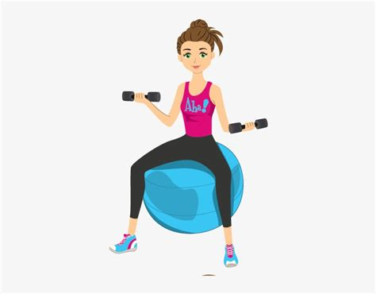

Welcome to Exercise Thursday! Today, we’ll explore the importance of physical activity and some ways to incorporate exercise into your daily routine.
Exercise is essential for overall health and well-being. Regular physical activity can help improve cardiovascular health, increase muscle strength and endurance, boost energy levels, and reduce the risk of chronic diseases such as obesity, diabetes, and heart disease.
Here are some ways you can incorporate exercise into your daily routine:
Remember, any physical activity is better than none. Start small and gradually increase your intensity and duration over time. If you’re new to exercise or have a medical condition, consult your doctor before starting a new exercise routine.
Incorporating exercise into your daily routine can significantly benefit your physical and mental health. Make it a priority, find an activity you enjoy, mix it up, make it social, and use technology to stay motivated. You can achieve your fitness goals and improve your overall health and well-being with consistency and dedication.